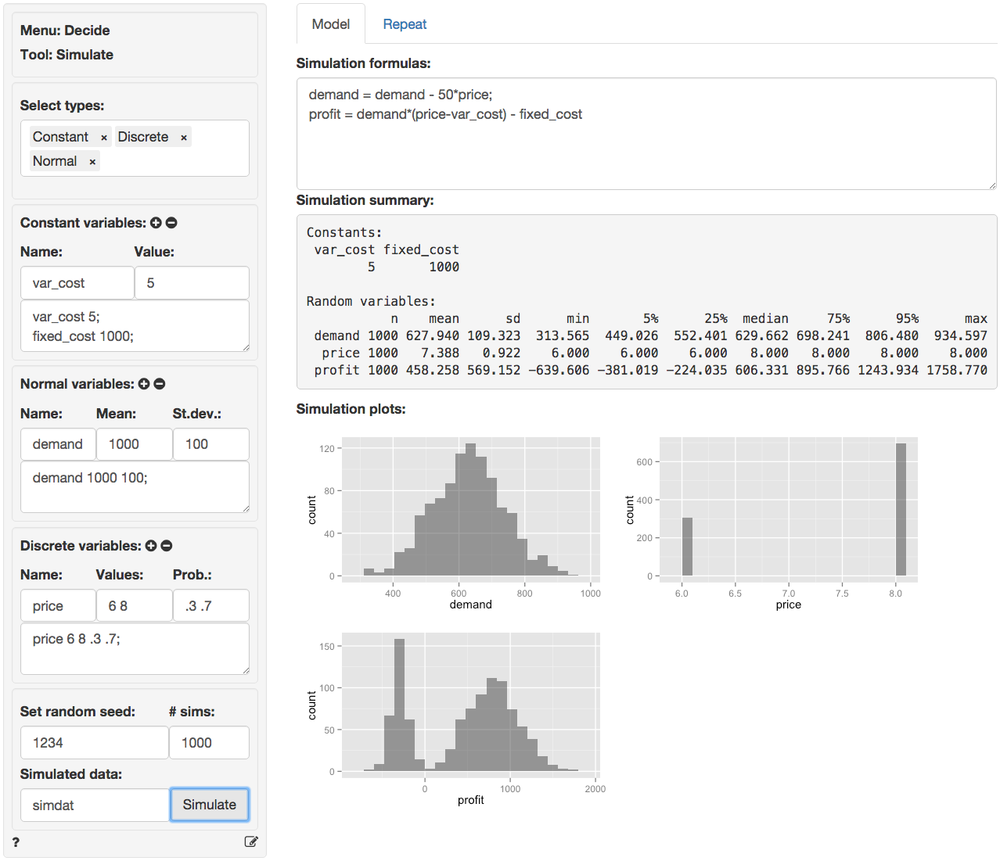
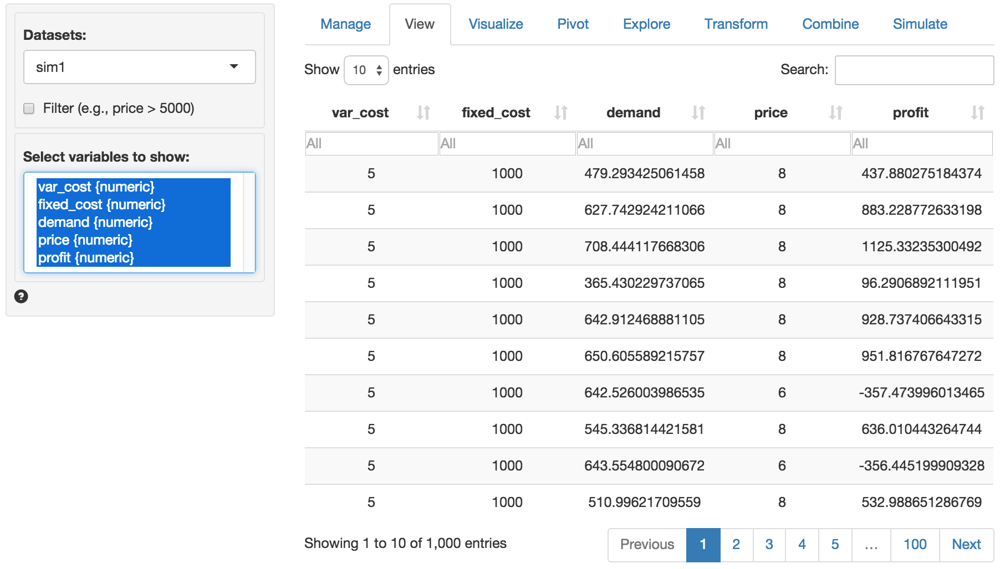
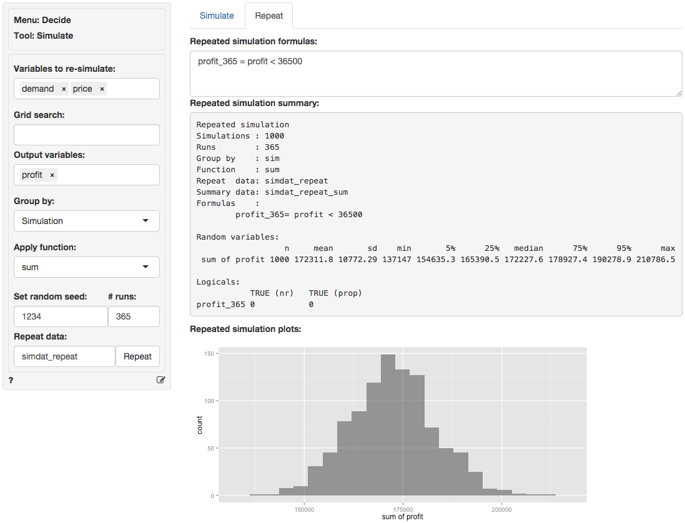

Decide > Simulate
Simulation for decision analysis
Start by selecting the types of variables to use in the analysis from the Select types dropdown in the Simulate tab. Available types include Constant, Binomial, Discrete, Normal, Uniform, and Sequence.
Constant
List the constants to include in the analysis in the Constant variables input. You can either enter names and values directly into the text area (e.g., “cost 3”) or enter a name (“cost”) and a value (5) in the Name and Value input respectively and then press the icon. Press the icon to remove a variable. Note that only variables listed in the (larger) text-input boxes will be included in the simulation.
Binomial
Add random variables with a binomial distribution using the Binomial variables inputs. Start by specifying a Name (“crash”), the number of trials (n) (e.g., 20) and the probability (p) of a “success” (.01). Then press the icon. Alternatively, enter (or remove) input directly in text area (e.g., crash 20 .01).
Discrete
Define random variables with a discrete distribution using the Discrete variables inputs. Start by specifying a Name (“price”), the values (6 8), and their associated probabilities (.3 .7). Then press the icon. Alternatively, enter (or remove) input directly in text area (e.g., price 6 8 .3 .7). Note that the probabilities must sum to 1. If not, a message will be displayed and the simulation cannot be run.
Normal
To include normally distributed random variables in the analysis select Normal from the Select types dropdown and use Normal variables inputs. For example, enter a Name (“demand”), the Mean (1000) and the standard deviation (St.dev., 100). Then press the icon. Alternatively, enter (or remove) input directly in text area (e.g., “demand 1000 100”).
Uniform
To include uniformly distributed random variables in the analysis select Uniform from the Select types dropdown. Provide parameters in the Uniform variables inputs. For example, enter a Name (“cost”), the Min (10) and the Max (15) value. Then press the icon. Alternatively, enter (or remove) input directly in text area (e.g., “cost 10 15”).
Data
To include variables from a separate data-set in the calculations specified in the Simulation formulas input choose a data-set from the Input data for calculations dropdown. This can be very useful in combination with the Grid search feature for portfolio optimization. However, when used in conjunction with other inputs care must be taken to ensure the number of values returned by different calculations is the same. Otherwise you will see an error like:
Error: arguments imply differing number of rows: 999, 3000
Grid search
To include a sequence of values select Grid search from the Select types dropdown. Provide the minimum and maximum values as well as the step-size in the Grid search inputs. For example, enter a Name (“price”), the Min (4), Max (10), and Step (0.01) value. If multiple variables are specified in Grid search all possible value combinations will be created and evaluated in the simulation. For example, suppose a first variable is defines as x 1 3 1 and a second as y 4 5 1 in the Grid search text input then the following data is generated:
| x | y |
|---|---|
| 1 | 4 |
| 2 | 4 |
| 3 | 4 |
| 1 | 5 |
| 2 | 5 |
| 3 | 5 |
Note that if Grid search has been selected the number of values generated will override the number of simulations or repetitions specified in # sims or # reps. If this is not what you want use Sequence. Then press the icon. Alternatively, enter (or remove) input directly in text area (e.g., “price 4 10 0.01”).
Sequence
To include a sequence of values select Sequence from the Select types dropdown. Provide the minimum and maximum values in the Sequence variables inputs. For example, enter a Name (“trend”), the Min (1) and the Max (1000) value. Note that the number of ‘steps’ is determined by the number of simulations. Then press the icon. Alternatively, enter (or remove) input directly in text area (e.g., “trend 1 1000”).
Formulas
To perform a calculation using the generated variables create a formula in the Simulation formulas input box in the main panel (e.g., “profit = demand * (price - cost)”). Formulas are used to add new variables to the simulation or to update existing variables. You must specify the name of the new variable to the left of a = sign. Variable names can contain letters, numbers, and _ but no other characters or spaces. You can enter multiple formulas. If, for example, you would also like to calculate the margin in each simulation press return after the first formula and type “margin = price - cost”.
Many of the same functions used with Create in the Data > Transform tab and in Filters in Data > View can also be included in formulas. You can use > and < signs and combine them. For example x > 3 & y == 2 would evaluate as “TRUE” when the variable x has values larger than 3 AND y has values equal to 2. Recall that in R, and most other programming languages, = is used to assign a value and == to evaluate if the value of a variable is exactly equal to some other value. In contrast != is used to determine if a variable is unequal to some value. You can also use expressions that have an OR condition. For example, to determine when Salary is smaller than $100,000 OR larger than $20,000 use Salary > 20000 | Salary < 100000. | is the symbol for OR and & is the symbol for AND (see also the help file for Data > View).
A few additional examples of formulas are shown below:
Create a new variable z that is the difference between variables x and y
z = x - y
Create a new
logicalvariable z that takes on the value TRUE when x > y and FALSE otherwisez = x > y
Create a new
logicalz that takes on the value TRUE when x is equal to y and FALSE otherwisez = x == y
The command above is equivalent to the one below using
ifelse. Note the similarity toifstatements in Excelz = ifelse(x < y, TRUE, FALSE)
ifelsestatements can be used to create more complex (numeric) variables as well. In the example below, z will take on the value 0 if x is smaller than 60. If x is larger than 100 z is set equal to 1. Finally, when x is 60, 100, or between 60 and 100, z is set to 2. Note: make sure to include the appropriate number of opening(and closing)bracketsz = ifelse(x < 60, 0, ifelse(x > 100, 1, 2))
To create a new variable z that is a transformation of variable x but with mean equal to zero:
z = x - mean(x)
To create a new variable z that shows the absolute values of x:
z = abs(x)
To find the value for
pricethat maximizesprofituse thefind_maxcommand. In this examplepricecould be a random orSequence variable. There is also afind_mincommand.optimal_price = find_max(profit, price)
To determine the minimum (maximum) value for each pair of values across two variables (e.g., x and y) use the functions
pminandpmax. In the example below, z will take on the value of x when x is larger than y and take on the value of y otherwisez = pmax(x,y)
See the table below for an example:
| x | y | pmax(x,y) |
|---|---|---|
| 1 | 0 | 1 |
| 2 | 3 | 3 |
| 3 | 8 | 8 |
| 4 | 2 | 4 |
| 5 | 10 | 10 |
Other commonly used functions are ln for the natural logaritm (e.g., ln(x)), sqrt for the square-root of x (e.g., sqrt(x)) and square to calculate square of a variable (e.g., square(x)).
To return a single value from a calculation use functions such as min, max, mean, sd, etc.
A special function useful for portfolio optimization is
sdw. It takes weights and variables as inputs and returns the standard deviation of the weighted sum of the variables. For example, to calculated the standard deviation for a portfolio of three stocks (e.g., Boeing, GM, and Exxon) you could use the equation below in theSimulation formulasinput.fandgcould be values (e.g., 0.2 and 0.8) or vectors of different weights specified in aGrid searchinput (see above).Boeing,GM, andExxonare names of variables in a data-set included in the simulation using aDatainput (see above).Pstdev = sdw(f, g, 1-f-g, Boeing, GM, Exxon)
For an example of how the simulate tool could be used for portfolio optimization see the state-file available for download here
Running the simulation
The value shown in the # sims input determines the number of simulation draws. To redo a simulation with the same randomly generated values, specify a number in the Set random seed input (e.g., 1234).
To save the simulated data for further analysis specify a name in the Simulated data input box. You can then investigate the simulated data by choosing the data with the specified name from the Datasets dropdown in any of the Data tabs (e.g., Data > View, Data > Visualize, or Data > Explore).
When all required inputs have been specified press the Simulate button to run the simulation.
In the screen shot below var_cost and fixed_cost are specified as constants. E is normally distributed with a mean of 0 and a standard deviation of 100. price is a discrete random variable that is set to $6 (30% probability) or $8 (70% probability). There are three formulas in the Simulation formulas text-input. The first establishes the dependence of demand on the simulated variable price. The second formula specifies the profit function. The final formula is used to determine the number (and proportion) of cases where profit is below 100. The result is assigned to a new variable profit_small.

In the output under Simulation summary we first see details on the specification of the simulation (e.g., the number of simulations). The section Constants lists the value of variables that do not vary across simulations. The sections Random variables and Logicals list the outcomes of the simulation. We see that average demand in the simulation is 627.940 with a standard deviation of 109.323. Other characteristics of the simulated data are also provided (e.g., the maximum profit is 1758.770). Finally, we see that the probability of profits below 100 is equal 0.315 (i.e., profits were below 100 in 315 out of the 1000 simulations).
Histograms of of the random variables as well as the variables created using Simulation formulas are shown in the main panel under Simulation plots.
Because we specified a name in the Simulated data box the data are available as simdat within Radiant (see screen shots below). To use the data in Excel click the download icon on the top-right of the screen in the Data > View tab or go to the Data > Manage tab and save the data to a csv file (or use the clipboard feature). For more information see the help file for the Data > Manage tab.

Repeating the simulation
Suppose the simulation discussed above was used to get a better understanding of daily profits. To develop insights into annual profits we could re-run the simulation 365 times. This can be done easily by using the functionality available in the Repeat tab. First, select the Variables to re-simulate, here E and price. Then select the variable(s) of interest in the Output variables box (e.g., profit). Set # reps to 365.
Next, we need to determine how to summarize the data. If we select Simulation in Group by the data will be summarized for each draw in the simulation across 365 repeated simulations resulting in 1000 values. If we select Repeat in Group by the data will be summarized for each repetition across 1000 simulations resulting in 365 values. If you imagine the full set of repeated simulated data as a table with 1000 rows and 365 columns, grouping by Simulation will create a summary statistic for each row and grouping by Repeat will create a summary statistic for each column. In this example we want to determine the sum of simulated daily profits across 365 repetitions so we select Simulation in the Group by box and sum in the Apply function box.
To determine, the probability that annual profits are below $36,500 we enter the formula below into the Repeated simulation formula text input.
profit_365 = profit < 36500
When you are done with the input values click the Repeat button. Because we specified a name for Repeat data two data sets will be created. “simdat_repeat” will have all elements of the repeated simulation (i.e., 1000 x 365 rows) and “simdat_repeat_sum” will have the summarized data grouped per simulation. Note that the extension “_sum" was used because we selected sum from the Apply function dropdown.
Descriptive statistics for the repeated simulation are shown in the main panel under Repeated simulation summary. We see that the annual expected profit (i.e., the mean of sum of profit) for the company is 172,311.836 with a standard deviation of 10,772.291. Although we found above that daily profits can be below 100, the chance that profits are below \(365 \times 100\) for the year are slim to none (i.e., the proportion of repeated simulations with annual profits below $36,500 is equal to 0).

A histogram of annual profits (sum of profit) is shown in the main panel under Repeated simulation plots. There is no plot for profit_365 because it only has one value (i.e., FALSE).
The state file for the example in the screenshot above is available for download here
For a simple example of how the simulate tool could be used to find the price that maximizes profits see the state-file available for download here
Using Grid Search in the Repeat tab
Note that the Repeat tab also has the option to use a Grid search input to repeat a simulation by replacing one or more Constants specified in the Simulation tab in an iterative fashion. Provide the minimum and maximum values as well as the step-size in the Grid search inputs. For example, enter a Name (“price”), the Min (4), Max (10), and Step (0.01) value. If multiple variables are specified in Grid search all possible value combinations will be created and evaluated in the simulation. Note that if Grid search has been selected the number of values generated will override the number of repetitions specified # reps. Then press the icon. Alternatively, enter (or remove) input directly in text area (e.g., “price 4 10 0.01”).